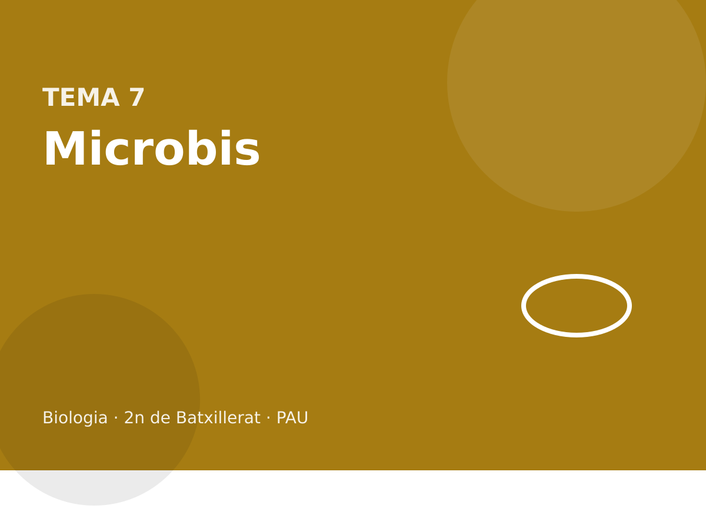

Microbiologia

Bacteris, arqueus, virus, viroides, prions, cicles, cicles biogeoquímics i biotecnologia microbiana.
Què entra a la PAU
Cal distingir bacteris i arqueus (paret, lípids, posició filogenètica, ecologia), espècie i soca, i calcular mides i augments amb les unitats m, mm, µm, nm i àngstrom. Entra el metabolisme bacterià i el seu paper en simbiosis i cicles biogeoquímics, la microbiota, les aplicacions (agricultura, farmàcia, alimentació, bioremediació) i les malalties, zoonosis i epidèmies.
Tècniques: esterilització, aïllament, cultiu i tinció de Gram. Transferència horitzontal: transformació, transducció i conjugació, i la resistència als antibiòtics. Les orientacions demanen no fer servir el terme parasexualitat. Dels virus cal composició, cicles lític i lisogènic i retrotranscripció. Viroides i prions es comparen amb els virus. Els fongs surten als exàmens com a patògens oportunistes, no com un tema de micologia.
7.1 Bacteris i arqueus
Bacteris i arqueus són procariotes: sense nucli, DNA circular al nucleoide, ribosomes 70S, sense orgànuls membranosos. No són el mateix grup. Els bacteris tenen paret de peptidoglicà i lípids de membrana amb enllaços èster. Els arqueus no tenen peptidoglicà; els lípids de membrana porten enllaços èter i cadenes isoprenoides, i n’hi ha d’extremòfils però també de comuns (metanògens, part de la microbiota). En els gens de la informació, els arqueus queden més a prop dels eucariotes que dels bacteris. Els tres dominis són Bacteria, Archaea i Eukarya.

Una espècie bacteriana agrupa soques properes. La soca és un llinatge concret dins l’espècie, sovint amb un plasmidi o una virulència diferents. Escherichia coli K-12 i una soca que causa diarrea són la mateixa espècie i no el mateix risc.
El nom científic s’escriu en cursiva, el gènere amb majúscula i l’espècie amb minúscula: Escherichia coli. La soca, si es dona, va al darrere i no sempre en cursiva.
Bacteris i arqueus
| Bacteris | Arqueus | |
|---|---|---|
| Organització | procariota | procariota |
| Paret | peptidoglicà | sense peptidoglicà |
| Lípids de membrana | enllaços èster | enllaços èter |
| Parentiu | domini Bacteria | més propers als eucariotes en la maquinària genètica |
Dir «bacteri» per a qualsevol procariota és l’error. Els arqueus no es tenyeixen com un Gram clàssic de manual, perquè la tinció mira el peptidoglicà.
Bacteris i arqueus són procariotes: sense nucli, amb el DNA al nucleoide, ribosomes 70S i divisió per bipartició. No són el mateix domini. La paret bacteriana té peptidoglicà; la dels arqueus, no. Els lípids de membrana dels arqueus porten enllaços èter, no èster. La maquinària de transcripció dels arqueus s’assembla més a la eucariota que a la bacteriana. Per això un antibiòtic que toca el peptidoglicà (la penicil·lina i derivats, que bloquegen la síntesi de la paret) mata bacteris i no arqueus, i no toca les nostres cèl·lules, que no tenen aquesta paret.
| Bacteri | Arqueu | Eucariota | |
|---|---|---|---|
| Nucli | no | no | sí |
| Peptidoglicà | sí | no | no |
| Ribosomes del citosol | 70S | 70S | 80S |
| Exemple que es demana | E. coli, cianobacteris | metanògens, halòfils | la resta d’éssers del temari |
Un microbi viu a pH àcid i a alta temperatura, no té peptidoglicà ni nucli, i els seus lípids de membrana són èters. És un bacteri extremòfil?
No. Sense peptidoglicà, amb èters i procariota, és un arqueu. «Extremòfil» descriu l’hàbitat, no el domini. Hi ha bacteris extremòfils, però aquests trets de paret i de lípids són d’arqueu. El pH i la temperatura no decideixen el domini.
Per què la penicil·lina no serveix contra un refredat víric ni contra un llevat?
Perquè actua sobre la síntesi del peptidoglicà. El virus no té paret bacteriana ni metabolisme propi de paret. El llevat és un fong, eucariota, amb paret de quitina. L’antibiòtic no té diana. Prendre’n per un virus només selecciona bacteris resistents de la microbiota.
Un fàrmac inhibeix la síntesi de peptidoglicà. Sobre qui actua, sobre qui no, i per què un arqueu i una cèl·lula humana queden fora?
Actua sobre bacteris, que tenen peptidoglicà a la paret. Un arqueu no en té: la paret és una altra. Una cèl·lula humana no té paret. El fàrmac no té diana en cap dels dos. No n’hi ha prou amb dir «procariota»: els arqueus ho són i no caurien.
Per què el ribosoma 70S d’un bacteri és una diana possible i el 80S del citosol humà no, amb el mateix fàrmac?
Perquè l’estructura no és la mateixa i el fàrmac encaixa en una. El 70S del mitocondri és el risc: s’assembla al bacterià. El 80S no. Un antibiòtic ben triat aprofita aquesta diferència. No tots els antibiòtics van al ribosoma; els de la paret van a un altre lloc.
7.2 Mida, Gram, cultiu i esterilització
Un bacteri típic fa 1–5 µm. Un virus, desenes o pocs centenars de nm. Una cèl·lula eucariota, 10–100 µm. Unitats: 1 mm = 10³ µm = 10⁶ nm. 1 Å = 0,1 nm. Els augments són la mida de la imatge dividida per la mida real, en les mateixes unitats. Mida real = mida de la imatge / augments.
En una micrografia de ×5 000, un bacteri mesura 10 mm. Quina mida real té, en µm?
10 mm / 5000 = 0,002 mm = 2 µm. Si l’enunciat dona una barra d’escala, és més segur fer servir l’escala que els mil·límetres de la pantalla.
La tinció de Gram separa bacteris per la paret. El cristall violeta i el lugol tenyeixen de lila. L’alcohol deshidrata. En els Gram positius la capa gruixuda de peptidoglicà reté el violeta i queden liles. En els Gram negatius la capa és prima i hi ha una membrana externa amb lipopolisacàrid: perden el violeta i la safranina els deixa roses. No és una classificació filogenètica completa, però és la que demana la prova.
El cultiu es fa en medi sòlid o líquid, estèril, sembrant en condicions asèptiques. En placa, una cèl·lula viable dona una colònia. L’aïllament per estries separa colònies. Esterilitzar vol dir eliminar tota forma viable, incloses les espores. L’autoclau (vapor a uns 121 °C) ho fa. La calor seca, la filtració (per a líquids que no es poden escalfar), la radiació i alguns desinfectants també, segons el cas. La pasteurització redueix la càrrega i no esterilitza.
La tinció de Gram separa bacteris per la paret. Els Gram positius tenen una capa gruixuda de peptidoglicà i queden violetes. Els Gram negatius en tenen una de prima i, per fora, una membrana externa amb lipopolisacàrid; es decoloren i agafen el contrast, rosa. No és una classificació evolutiva neta, però prediu sensibilitat a antibiòtics i el tipus d’estructura. Els arqueus no es tenyeixen com un Gram fiable, perquè la tinció mira el peptidoglicà.
Cultivar és fer créixer en un medi. Esterilitzar és matar tota forma de vida, espores incloses: autoclau (vapor a pressió), flama, filtració per a líquids que no es poden escalfar. Desinfectar és reduir els microorganismes d’una superfície, no garantir l’absència d’espores. Pasteuritzar és un escalfament suau que mata patògens vegetatius i allarga la vida de la llet; no esterilitza. Una espora bacteriana no és un gàmeta: és una forma de resistència, amb el DNA protegit, que germina quan les condicions tornen.
Un material quirúrgic surt de l’autoclau. Es pot dir que està desinfectat, i prou? I una llet pasteuritzada està estèril?
L’autoclau esterilitza: és més que desinfectar. La llet pasteuritzada no està estèril: s’han mort formes vegetatives i queden, o hi poden quedar, espores i microorganismes termoresistents no patògens. Per això es guarda a la nevera i caduca. Confondre els tres mots és un error de protocol, no de vocabulari menor.
Un bacteri Gram negatiu i un de positiu es tracten amb un antibiòtic que ha de travessar la membrana externa. Quin dels dos és més probable que resisteixi per una qüestió de barrera?
El Gram negatiu, perquè té la membrana externa amb lipopolisacàrid, que moltes molècules no travessen. El positiu té el peptidoglicà exposat. No és una llei per a tots els antibiòtics: depèn de la diana. Però la barrera extra és del Gram negatiu.
Ordeneu de menys a més eficaç, per a un instrumental que ha de quedar sense cap microorganisme ni espora: rentar amb aigua, desinfectar, pasteuritzar, esterilitzar a l’autoclau. Quina sobra perquè no s’aplica a instrumental?
Rentar, desinfectar, esterilitzar. Pasteuritzar sobra: és un tractament de la llet i de líquids alimentaris, no d’un bisturí, i no mata espores. L’autoclau és el que es fa servir al quiròfan. Desinfectar rebaixa la càrrega; no garanteix l’esterilitat.
Una espora bacteriana germina quan tornen l’aigua i els nutrients. És un ou o un gàmeta?
No. És la mateixa cèl·lula, en forma resistent, amb el DNA protegit i el metabolisme aturat. No hi ha reducció cromosòmica ni fecundació. Germinar és reprendre el creixement vegetatiu. Tractar-la com a reproducció sexual és l’error.
7.3 Metabolisme, simbiosi i cicles
Pel que mengen i d’on treuen l’energia, els bacteris es reparteixen en fotoautòtrofs (cianobacteris: llum i CO₂, amb O₂), fotoheteròtrofs, quimioautòtrofs (oxiden un inorgànic i fixen CO₂: nitrificants, bacteris del sofre) i quimioheteròtrofs (la majoria de patògens i descomponedors). N’hi ha d’aerobis, d’anaerobis estrictes i de facultatius.
La simbiosi és una relació estreta i duradora. El mutualisme beneficia els dos (Rhizobium i les lleguminoses: la planta dona compostos de carboni i el bacteri fixa N₂). El comensalisme beneficia l’un sense perjudicar l’altre. El parasitisme beneficia l’un i perjudica l’hoste.

Al cicle del nitrogen, la nitrogenasa d’Azotobacter o de Rhizobium passa N₂ a amoni. Nitrosomonas oxida amoni a nitrit i Nitrobacter el nitrit a nitrat: és la nitrificació, quimiosíntesi. La desnitrificació torna N₂ a l’atmosfera. L’amonificació allibera amoni de la matèria orgànica. Al carboni, fotosíntesi i respiració mouen el CO₂; alguns arqueus fan metà. Al sofre, hi ha bacteris que oxiden o redueixen compostos de sofre. Al fòsfor no hi ha un pas gasós important: els microorganismes mineralitzen fosfat orgànic. Això és el que el currículum de 2n demana dels ecosistemes. La petjada ecològica i les xarxes tròfiques completes són de 1r i no són un bloc de la PAU de Biologia de 2n.
El criteri de processar matèria i energia «també a escala d’ecosistema» es respon amb aquests cicles, no amb un tema sencer d’ecologia de 1r.
Els bacteris ocupen tots els papers tròfics. N’hi ha de fotoautòtrofs (cianobacteris), de quimioautòtrofs (nitrificants) i de heteròtrofs (la majoria dels que cultivem). Al cicle del nitrogen els passos que cal saber atribuir són: fixació de N₂ a amoníac (Rhizobium i cianobacteris, entre d’altres), nitrificació (amoníac a nitrit i nitrit a nitrat, bacteris quimiosintètics), assimilació del nitrat per les plantes, amonificació (descomponedors que tornen amoníac des de la matèria orgànica) i desnitrificació (nitrat a N₂, que torna a l’atmosfera i tanca el cicle). Sense fixadors, el nitrogen de l’aire no entraria a la xarxa tròfica.
Un camp sense lleguminoses s’empobreix en nitrogen disponible, tot i que l’aire és nitrogen en un 78 %. Quin pas microbià hi falta i per què l’aire no n’hi fa prou?
Falta la fixació. El N₂ és molt estable i gairebé cap ésser viu el pot reduir. Els Rhizobium de les arrels de les lleguminoses, i alguns cianobacteris, sí. El nitrogen de l’aire no és nitrat. Sense el pas biològic, o sense adob, les plantes no tenen font.
La desnitrificació i la fixació semblen contradictòries. Per què les dues són necessàries al cicle?
La fixació treu N₂ de l’atmosfera i el posa en forma biològica. La desnitrificació el torna a l’atmosfera. Sense la segona, el nitrogen es quedaria acumulat als sòls i a l’aigua i l’atmosfera se n’empobriria a escala geològica. Són passos oposats en la forma química i complementaris en el cicle. La nitrificació, al mig, passa d’amoníac a nitrat, que és el que moltes plantes absorbeixen.
Poseu en ordre, des del N₂ atmosfèric fins al N₂ que hi torna: fixació, nitrificació, assimilació, amonificació, desnitrificació. Qui fa la fixació i qui la desnitrificació?
Fixació (N₂ → amoníac, Rhizobium o cianobacteris), assimilació (la planta incorpora el nitrogen), amonificació (els descomponedors tornen amoníac), nitrificació (amoníac → nitrat) i desnitrificació (nitrat → N₂, bacteris). L’ordre entre amonificació i nitrificació es pot creuar segons si es parteix de matèria orgànica o d’amoníac ja fixat. El que no es pot fer és posar la desnitrificació abans de tenir nitrat, ni la fixació com si fos nitrificació.
Per què un adob de nitrat no és el mateix procés que la fixació, si tots dos aporten nitrogen a la planta?
Perquè el nitrat ja està en forma assimilable: la planta el pot absorbir sense cap microbi. La fixació és reduir el N₂, que la planta no sap fer. L’adob salta el pas biològic. La fixació continua essent l’única entrada natural des de l’atmosfera.
Un sòl perd nitrat cap a l’atmosfera en condicions d’anòxia. Quin procés bacterià és, i per què no és la fixació, que també toca el N₂?
És la desnitrificació: nitrat a N₂. La fixació va en sentit contrari, de N₂ a amoníac, i la fan organismes amb nitrogenasa, sovint en simbiosi i amb un cost gran d’ATP. La desnitrificació la fan altres bacteris quan no hi ha oxigen i fan servir el nitrat com a acceptor. El mateix gas, dos sentits, dos grups de microorganismes.
7.4 Microbiota, malaltia i indústria
La microbiota és el conjunt de microorganismes que viuen en un cos sa o en un ambient. No es diu flora. A l’intestí ajuda a digerir, fabrica algunes vitamines i ocupa el lloc que si no ocuparia un patògen. Un desinfectant mal aplicat o un antibiòtic innecessari la desmunten.
Un patogen causa malaltia. Una zoonosi passa d’un animal vertebrat a les persones (la ràbia). Una epidèmia és un augment de casos per damunt del que és habitual en un lloc i un temps; una pandèmia s’estén per països. L’endèmia es manté de manera estable en una zona.
Les aplicacions que cal saber citar: agricultura (Rhizobium, control biològic), farmàcia (antibiòtics, insulina recombinant), alimentació (iogurt, formatge, pa, vi) i bioremediació (degradar un contaminant). No tot microorganisme industrial és transgènic.
La microbiota normal colonitza pell i mucoses i competeix amb els patògens pel lloc i pels nutrients. No és un brutícia a eliminar. Un antibiòtic d’ampli espectre la redueix i obre la porta a oportunistes. Patògen és el que provoca malaltia; oportunista, el que només ho fa si les defenses o la microbiota fallen. La virulència és el grau, no un sinònim de «microbi».
A la indústria, els bacteris i els fongs fan iogurt i formatge (fermentació làctica), pa i cervesa (fermentació alcohòlica del llevat), antibiòtics (fongs i actinobacteris) i proteïnes recombinants. El microorganisme industrial no és un patògen: és un productor. Cal dir quin metabolisme fa servir, no només «s’hi posen microbis».
Després d’un antibiòtic, una persona fa una infecció per un fong que abans no es notava. El fong s’ha tornat més virulent?
No necessàriament. Ha desaparegut la competència bacteriana que el mantenia a ratlla. És un oportunista aprofitant un nínxol buit, no una mutació de virulència. Tornar a tenir microbiota és el que el controla, no un antifúngic per sistema.
El iogurt es fa amb llet i bacteris que produeixen làctic. Quin tipus de metabolisme és, quin gas no s’ha d’esperar, i per què la llet s’acidifica?
Fermentació làctica. No hi ha CO₂, a diferència de l’alcohòlica: el piruvat es redueix a lactat sense descarboxilar-se. El làctic baixa el pH, la caseïna coagula i la llet s’espessa. L’ATP dels bacteris és el de la glucòlisi, 2 per glucosa.
Un antibiòtic d’ampli espectre cura una infecció i, al cap d’uns dies, apareix una altra infecció per un microorganisme que ja era a l’intestí. Què s’ha eliminat a més del patogen?
Part de la microbiota que competia amb ell. L’oportunista no ha hagut de tornar-se més virulent: ha trobat el lloc lliure. El patogen inicial i l’oportunista no són el mateix episodi. Refer la microbiota, no allargar l’antibiòtic sense motiu, és el que tanca la història.
El pa, la cervesa i el iogurt són fermentacions. Per què només un desprèn CO₂ en quantitat, i quin organisme el fa?
El pa i la cervesa són llevat, fermentació alcohòlica, amb CO₂. El iogurt és bacteris, fermentació làctica, sense CO₂. El llevat és un fong unicel·lular, no un bacteri. El CO₂ del pa és el mateix tipus de reacció que el de la cervesa; canvia el que se’n fa, no la via.
7.5 Transferència horitzontal i antibiòtics
Els bacteris no només hereten el DNA de la cèl·lula mare. En passen entre cèl·lules del mateix moment. La transformació és la captació de DNA lliure del medi. La transducció la fa un bacteriòfag, que s’enduu DNA de l’hoste anterior. La conjugació passa per un pilus: sovint un plasmidi (el plasmidi F, o un plasmidi R de resistències). Cap d’aquests tres processos es diu parasexualitat: les orientacions rebutgen el terme.
Els antibiòtics actuen, segons la família, sobre la paret (els β-lactàmics), sobre el ribosoma 70S, sobre la síntesi d’àcids nucleics o sobre la membrana. El 70S permet una certa selectivitat: el nostre ribosoma citosòlic és 80S. La resistència apareix per mutació o, molt sovint, arriba en un plasmidi R per conjugació. Fer servir antibiòtics quan no calen selecciona les soques resistents. No és que el fàrmac ensenyi el bacteri.
Un plasmidi amb un gen de resistència passa d’un bacteri viu a un altre per un pilus, sense que hi hagi fag ni DNA lliure al medi. Com es diu el mecanisme?
Conjugació. Si fos DNA nu, transformació. Si el vehicle fos un virus, transducció.
Els bacteris no fan meiosi, però barregen DNA. La transformació agafa DNA lliure del medi. La transducció el rep d’un bacteriòfag que s’ha endut un tros del bacteri anterior. La conjugació el passa per un pont, des d’un bacteri que té el plasmidi adequat. Les tres són transferència horitzontal: el receptor no és fill del donant. Un plasmidi de resistència es pot escampar així més de pressa que per mutació.
La resistència no és «el cos que s’acostuma». És una població bacteriana on una variant heretable (una bomba d’eflux, un enzim que trenca l’antibiòtic, una diana modificada) sobreviu i substitueix les altres. Acabar el tractament importa perquè les cèl·lules que queden, les més tolerants, són les que fundarien la població resistent. No crear l’antibiòtic amb l’ús incorrecte: seleccionar-lo.
Un plasmidi amb un gen de resistència passa d’un bacteri a un altre per un pont, sense que cap dels dos es divideixi. Com es diu el mecanisme, i per què no és una mutació?
Conjugació. No és una mutació perquè la seqüència no ha canviat dins del donant: s’ha copiat un DNA que ja existia i s’ha transferit. El receptor guanya el gen d’un sol cop. La mutació seria un canvi nou de bases. La conjugació explica que la resistència salti entre soques, i fins i tot entre espècies properes.
Per què un antibiòtic bacteriostàtic i un de bactericida no es descriuen igual, si tots dos «curen»?
El bacteriostàtic atura el creixement i deixa que el sistema immunitari acabi la feina. El bactericida mata. En un pacient immunodeprimit, aturar el creixement pot no bastar. A la prova, el que es valora és no dir que tot antibiòtic lisia la cèl·lula: només ho fan els que destrueixen la paret en una cèl·lula que creix.
Un bacteri sensible es torna resistent després de conviure amb un de resistent, sense dividir-se i sense que hi hagi DNA lliure al medi ni virus. Quin mecanisme queda, i quin gen és més probable que hagi passat?
La conjugació: el DNA passa per un pont, no pel medi ni per un fag. El que sol passar és un plasmidi, sovint amb gens de resistència. No és transformació (això seria DNA lliure) ni transducció (això seria un virus). Tampoc no és una mutació nova: el gen ja era al donant.
Per què no acabar un tractament antibiòtic selecciona resistents, si el fàrmac els mata?
Perquè els mata desigualment. Els més sensibles moren primer. Els que toleren una mica més queden, si es talla el tractament abans d’eliminar-los, i són la població que creix després. El fàrmac no els ha fet resistents; els ha deixat sols. Completar el tractament és reduir aquesta finestra.
7.6 Virus: estructura i cicles
Un virus no és una cèl·lula. És un àcid nucleic (DNA o RNA, d’una o dues cadenes) dins una càpsida de proteïna. Alguns porten un embolcall membranós, pres de l’hoste, amb espines. No tenen metabolisme propi: només es repliquen dins una cèl·lula. Es classifiquen pel genoma i per l’hoste, no per un regne clàssic.

El cicle lític d’un bacteriòfag: adsorció, entrada del genoma, replicació i síntesi de peces, acoblament i lisi de l’hoste. El lisogènic: el DNA víric s’integra (pròfag) i es copia amb el bacteri fins que un senyal l’indueix i entra en el cicle lític. No tots els virus fan els dos cicles.

Els retrovirus, com el VIH, porten RNA i retrotranscriptasa. L’RNA es copia a DNA, el DNA s’integra com a provirus i a partir d’aquí la cèl·lula el transcriu i el tradueix com si fos seu. La retrotranscripció és l’excepció al camí DNA → RNA, no el camí habitual de les nostres cèl·lules.
Cicle lític i cicle lisogènic
| Lític | Lisogènic | |
|---|---|---|
| El genoma víric | es replica a part | s’integra (pròfag) i es copia amb el bacteri |
| La cèl·lula | es trenca i allibera virus | continua viva fins a la inducció |
| Quan es veu | infecció productiva | latència; després pot passar al lític |
Un retrovirus com el VIH fa un pas de més: l’RNA es copia a DNA (retrotranscriptasa) i aquest DNA s’integra. No és un bacteriòfag, però el principi d’integració s’assembla al lisogènic.
Un virus no és una cèl·lula. No té metabolisme propi ni ribosomes. Té un genoma (DNA o RNA) dins una càpsida de proteïna i, alguns, un embolcall membranós robat a la cèl·lula hoste. Es replica només dins una cèl·lula, fent servir la seva maquinària. Fora, és un virió inert. El bacteriòfag de la làmina té cap, collar, cua, placa basal i fibres: és un model de virus complex. Molts virus animals no tenen cua; tenen càpsida i, sovint, embolcall amb glicoproteïnes d’unió.
Al cicle lític el virus entra, copia el genoma, fabrica peces, es munta i trenca la cèl·lula. Al lisogènic el genoma s’integra (pròfag) i es replica amb el bacteri, sense matar-lo, fins que un senyal l’indueix i passa al lític. No tot virus latent és un pròfag: el terme pròfag és el del bacteriòfag. El VIH integra DNA, però és un retrovirus d’una cèl·lula eucariota.
Un cultiu bacterià es lisi al cap d’una hora d’afegir un filtrat que passa un filtre de 0,2 µm. Al microscopi òptic no es veu cap bacteri nou. Què hi ha al filtrat, i quin cicle encaixa amb la lisi ràpida?
Un bacteriòfag: passa el filtre que atura bacteris i no es veu a l’òptic. La lisi ràpida és el cicle lític. Si el cultiu no es lisés i, en canvi, els bacteris fills heretessin la capacitat de produir virus després d’un xoc, seria lisogènic. El filtrat no és un verí químic si la capacitat de lisar es transmet diluint-lo en cultius nous: això és replicació.
El VIH porta RNA i, un cop dins el limfòcit, apareix DNA víric al cromosoma. Quin enzim víric falta en un bacteriòfag de DNA, i per què?
La retrotranscriptasa. El bacteriòfag de DNA ja porta el mateix tipus d’àcid nucleic que el cromosoma hoste i el pot replicar sense passar per RNA. El VIH ha de fer DNA a partir del seu RNA abans d’integrar-se. Sense aquest enzim, el seu cicle s’atura. Els fàrmacs que el bloquegen no servirien contra un virus de DNA.
Un virus integra el genoma i la cèl·lula continua dividint-se, fins que un agent nociu indueix la producció de partícules i la lisi. Com es diuen les dues fases, i en quin moment és un pròfag si l’hoste és un bacteri?
La fase d’integració i espera és la lisogènica; la de producció i lisi, la lítica. Mentre està integrat en un bacteri, el genoma víric es diu pròfag. No és un pròfag si l’hoste és una cèl·lula humana: el terme és aquest. La inducció és el pas de l’una a l’altra, no un tercer cicle.
Per què un virus no creix en un medi de cultiu ric, sense cèl·lules, i un bacteri sí?
Perquè el virus no té ribosomes ni metabolisme. El medi li dona molècules, no la maquinària per fer-les servir. El bacteri sí que té la maquinària i pot fer servir el medi. Cultivar un virus vol dir cultivar cèl·lules i infectar-les. Una placa de Petri sola no és un hoste.
Compareu, en quatre files, el cicle lític i el lisogènic: on és el genoma, què fa la cèl·lula, si es produeixen virions de seguida, i com es passa de l’un a l’altre.
Lític: el genoma es replica a part, la cèl·lula acaba lisant-se, els virions surten de seguida, i no cal cap inducció perquè ja és el cicle productiu. Lisogènic: el genoma integrat (pròfag, si és un bacteri), la cèl·lula viu i es divideix, no hi ha virions mentre dura la latència, i un senyal d’estrès indueix el pas al lític. No són dos virus diferents. Són dos programes del mateix virus, quan el virus els té tots dos.
7.7 Viroides, prions i fongs

Un viroide és un RNA circular petit, sense càpsida, que infecta plantes. Un prió és una proteïna mal plegada (PrPSc) que indueix el plegament anormal de la proteïna normal. No porta àcid nucleic. Causa encefalopaties espongiformes, com la de Creutzfeldt-Jakob. No es combat amb un antibiòtic ni amb un antiviral clàssic.
Els fongs són eucariotes, amb paret de quitina. Els llevats són unicel·lulars; les floridures fan hifes. Són heteròtrofs. En un examen surten sobretot com a oportunistes: Candida aprofita una immunodepressió o una microbiota desfeta. No cal la classificació dels fílums.
Una pàgina diu que un prió és un virus molt petit. Què hi ha de malament?
El prió no té àcid nucleic ni càpsida. No és un virus. És una proteïna infecciosa.
Un viroide és un RNA circular nu, sense càpsida, que infecta plantes. No codifica proteïnes: interfereix amb l’RNA de l’hoste. Un prió és una proteïna mal plegada que indueix el plegament incorrecte de la proteïna sana del mateix tipus. No porta àcid nucleic. Les encefalopaties espongiformes en són l’exemple. Un fong és eucariota, amb paret de quitina, i pot ser unicel·lular (llevat) o filamentós (floridura). No és un bacteri. Els antibiòtics de la paret bacteriana no el toquen; per això hi ha antifúngics, amb una altra diana.
| Àcid nucleic | Càpsida | Cèl·lula? | |
|---|---|---|---|
| Virus | sí | sí | no |
| Viroide | RNA nu | no | no |
| Prió | no | no | no; és una proteïna |
| Bacteri | DNA propi | no | sí, procariota |
| Fong | genoma eucariota | no | sí |
Un agent infecciós no es destrueix amb una digestió que trenca àcids nucleics, i sí amb una que desnaturalitza proteïnes. No es veu cap partícula amb càpsida. Què és, i què no pot ser?
Un prió. No pot ser un virus ni un viroide, perquè aquests es perden si es destrueix l’àcid nucleic. No pot ser un bacteri. La proteïna és l’agent, i transmet el plegament, no una seqüència de nucleòtids.
Per què un llevat es pot fer servir per produir una proteïna humana glicosilada i un bacteri, sovint, no de la mateixa manera?
Perquè el llevat és eucariota i té reticle i Golgi, que fan la glicosilació. El bacteri no té aquests orgànuls. La proteïna es pot sintetitzar igualment al ribosoma bacterià, però sense els sucres que l’hoste humà hi posaria. Per a algunes proteïnes terapèutiques això obliga a triar un hoste eucariota.
Tres agents: un RNA sense càpsida que infecta plantes, una proteïna que canvia el plegament d’una altra, un eucariota amb paret de quitina. Poseu el nom i digueu quin no es destrueix trencant àcids nucleics.
Viroide, prió i fong. El prió no es destrueix trencant àcids nucleics, perquè no en porta. El viroide sí que cau, perquè és RNA. El fong també, perquè té genoma, a més de ser una cèl·lula que es mata per moltes altres vies. El que l’enunciat vol aïllar és el prió.
Un llevat i un bacteri fan tots dos fermentació alcohòlica en algunes soques, però només un serveix per glicosil·lar una proteïna humana. Quin, i per quin orgànul?
El llevat, perquè té reticle i Golgi. El bacteri no té orgànuls membranosos i la glicosilació eucariota no s’hi fa. La fermentació no decideix això: decideix l’energia. La maduració de la proteïna decideix l’hoste industrial.
7.8 Mapa del tema
Cèl·lula procariota (bacteri o arqueu) o forma acel·lular (virus, viroide, prió). Dins els bacteris: paret i Gram, metabolisme i cicles, transferència horitzontal. El fong és l’eucariota del tema, i només al nivell d’un oportunista.
Resum
| Àcid nucleic | Càpsida | Cèl·lula | |
|---|---|---|---|
| Bacteri / arqueu | DNA circular | no | sí, procariota |
| Virus | DNA o RNA | sí | no |
| Viroide | RNA | no | no |
| Prió | no | no | no |
Errors típics a la PAU
- Dir flora en comptes de microbiota.
- Anomenar parasexualitat la conjugació, la transformació o la transducció.
- Confondre esterilització i pasteurització.
- Dir que els arqueus tenen peptidoglicà.
- Tractar el prió com un virus.
- Oblidar que la mida real és la de la imatge partida pels augments.
Glossari
- Soca
- Llinatge concret dins d’una espècie microbiana.
- Gram positiu
- Bacteri amb paret gruixuda de peptidoglicà; queda lila.
- Transformació
- Captació de DNA lliure.
- Transducció
- Transferència de DNA mitjançant un virus.
- Conjugació
- Transferència de DNA per contacte, sovint d’un plasmidi, a través d’un pilus.
- Pròfag
- Genoma víric integrat en el DNA bacterià durant el cicle lisogènic.
- Retrotranscripció
- Síntesi de DNA a partir d’RNA, pròpia dels retrovirus.
- Prió
- Proteïna infecciosa, sense àcid nucleic.
Autoavaluació
En una micrografia de 2 000 augments, un coc mesura 4 mm. Calculeu la mida real en micròmetres i indiqueu la conversió. Digueu si aquesta mida és pròpia d’un bacteri o d’una cèl·lula eucariota típica.
Resposta
La mida real és 4 mm / 2 000 = 0,002 mm. Com que 1 mm = 1 000 µm, 0,002 mm = 2 µm. Es divideix pels augments, no es multiplica, perquè la fotografia és més gran que l’objecte. Dos micròmetres són la mida d’un bacteri. Una cèl·lula eucariota animal típica és de l’ordre de 10 a 30 µm, i un virus queda per sota del límit del microscopi òptic, al voltant de 0,2 µm.
Després de la tinció de Gram, un bacteri queda rosa. Expliqueu quina estructura de la paret ho provoca i per què no es pot concloure, només amb aquest color, que es tracta d’un arqueu.
Resposta
El color rosa és el dels Gram negatius. Tenen una capa fina de peptidoglicà i, per fora, una membrana externa amb lipopolisacàrid. L’alcohol decolorant arrossega el cristall violeta, que aquesta paret no reté, i la safranina de contrast els tenyeix de rosa. Un Gram positiu, amb peptidoglicà gruixut, retindria el violeta. Un arqueu no es classifica amb aquesta tinció: no té peptidoglicà, i el mètode està pensat per a la paret bacteriana. El color, tot sol, no assigna el domini.
En el cicle del nitrogen, quins bacteris fixen el N₂ atmosfèric i quin pas fa el que oxida el nitrit fins a nitrat? Distingiu la fixació de la nitrificació.
Resposta
La fixació redueix el N₂ a amoníac. La fan, entre d’altres, Rhizobium, en simbiosi amb les lleguminoses, i Azotobacter, de vida lliure. La planta no sap trencar el triple enllaç del N₂, de manera que sense aquests bacteris, o sense adob, el nitrogen de l’aire no entra a la xarxa tròfica. L’oxidació del nitrit a nitrat és un pas posterior, la segona etapa de la nitrificació, i la fa Nitrobacter. Nitrosomonas fa el pas anterior, d’amoni a nitrit. La nitrificació no treu nitrogen de l’atmosfera: transforma nitrogen que ja és en forma reduïda.
Un bacteri incorpora DNA lliure que hi ha al medi, sense que intervingui cap virus ni cap contacte amb una altra cèl·lula. Com s’anomena aquest mecanisme i per què no és ni conjugació ni transducció?
Resposta
És transformació. El DNA entra des del medi, on ha quedat lliure, per exemple després de la lisi d’una altra cèl·lula. No és conjugació, perquè la conjugació exigeix un contacte i un pont entre dues cèl·lules, sovint per transferir un plasmidi. No és transducció, perquè la transducció la fa un bacteriòfag que s’ha endut DNA del bacteri anterior. Els tres mecanismes són transferència horitzontal —el receptor no és fill del donant—, però el vehicle és diferent: medi, pont o virus.
Compareu un virus, un viroide i un prió pel que fa a l’àcid nucleic i a la càpsida. La resposta ha de permetre identificar-ne qualsevol dels tres a partir d’aquestes dues dades.
Resposta
El virus té àcid nucleic, DNA o RNA, tancat dins una càpsida de proteïna; alguns tenen, a més, un embolcall. El viroide és un RNA circular nu: té àcid nucleic però no té càpsida, i infecta plantes. El prió no té àcid nucleic: és una proteïna mal plegada que indueix el plegament incorrecte de la proteïna del mateix tipus. Si un agent es destrueix en trencar els àcids nucleics, no pot ser un prió. Si no té càpsida i és només RNA, és un viroide i no un virus. Cap dels tres no és una cèl·lula.
Biologia · 2n de Batxillerat · dossier de teoria